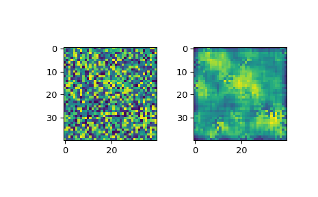

scipy.signal.wiener¶
-
scipy.signal.wiener(im, mysize=None, noise=None)[source]¶ Perform a Wiener filter on an N-dimensional array.
Apply a Wiener filter to the N-dimensional array im.
- Parameters
- imndarray
An N-dimensional array.
- mysizeint or array_like, optional
A scalar or an N-length list giving the size of the Wiener filter window in each dimension. Elements of mysize should be odd. If mysize is a scalar, then this scalar is used as the size in each dimension.
- noisefloat, optional
The noise-power to use. If None, then noise is estimated as the average of the local variance of the input.
- Returns
- outndarray
Wiener filtered result with the same shape as im.
Notes
This implementation is similar to wiener2 in Matlab/Octave. For more details see [1]
References
- 1
Lim, Jae S., Two-Dimensional Signal and Image Processing, Englewood Cliffs, NJ, Prentice Hall, 1990, p. 548.
Examples
>>> from scipy.misc import face >>> from scipy.signal.signaltools import wiener >>> import matplotlib.pyplot as plt >>> import numpy as np >>> img = np.random.random((40, 40)) #Create a random image >>> filtered_img = wiener(img, (5, 5)) #Filter the image >>> f, (plot1, plot2) = plt.subplots(1, 2) >>> plot1.imshow(img) >>> plot2.imshow(filtered_img) >>> plt.show()
